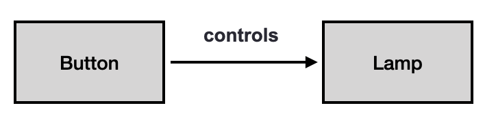
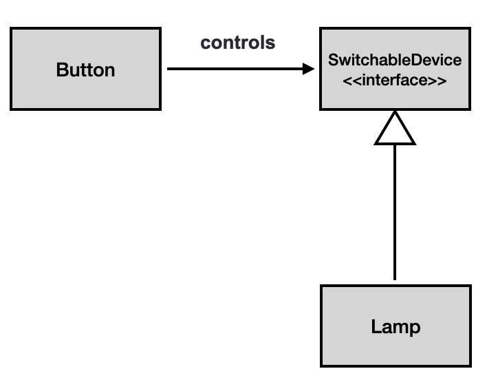
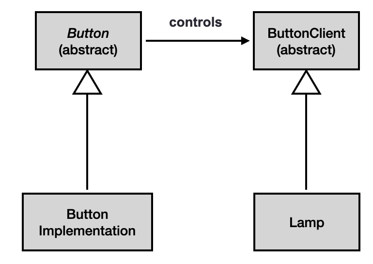
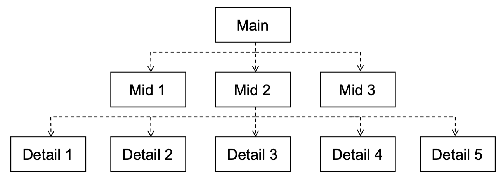
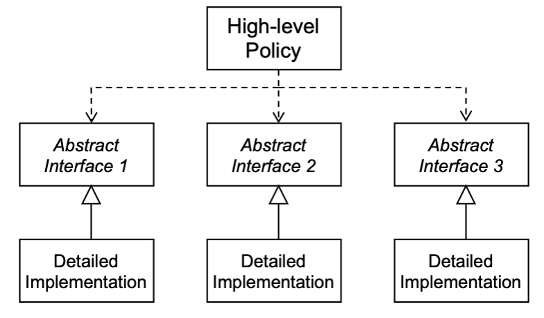
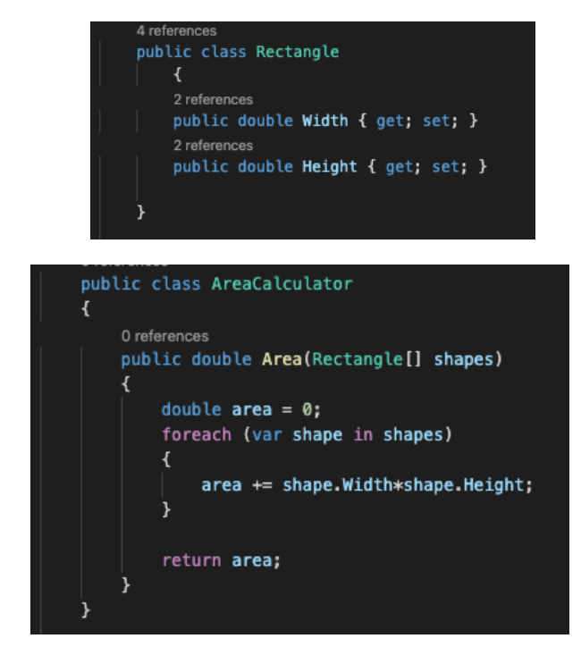
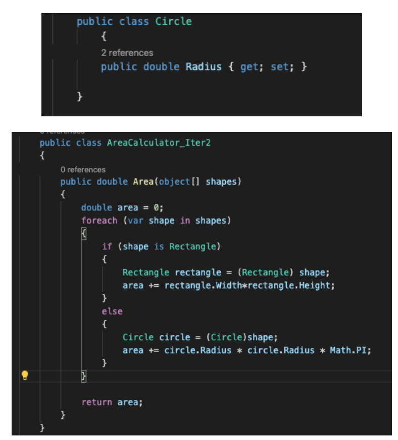

Read this first
This template was created by the SEBE Design Pod and is available for your use when creating your content. The template provides a variety of options for styling page text and images. Some tips on using this template:
There are additional layout options available in the '_SEBE_Advanced' template.
Important! This template is designed and tested to work with correctly formatted HTML code. Any deviation from this may result in the template failing to render as it should. For any assistance with HTML formatting, please contact SEBE CloudDeakin Support.
For more information about this template, visit the Making the most of web pages in SEBE CloudDeakin page in the Designing Your Unit section of the SEBE Staff Hub.
By changing the Heading 3 above to default, blue, turquoise or pink you can change the colour theme of your SEBE CloudDeakin template page.
When this page is published the Heading 3 above will be removed, but it will still be here in edit mode if you wish to change the colour theme.
There is no need to delete these instructions or the Heading 3 above. They are only visible in edit mode and will be removed when your page is published.
By using the keyword 'banner' as a <H3> (Heading 3), an image below that heading until the next <HR> (Insert Line from the dropdown next to the Insert Quicklink) will be included inside an Image Container that will render the image as a banner image.
There is no need to delete these instructions or the Heading 3 above. They are only visible in edit mode and will be removed when your page is published.
Dependencies exhibits relationship (associations) among various entities in our computer program. You can have a package which depends on several other packages. How many times while installing a package in python requires us to install several other packages? Well, quite often. You are never suppose to write your program in vacuum. And your solution should not re-invent the wheel. So you are expected to re-use as much code that is already written/tested and used. But this does create a dependency, which is not bad as such, but it can creates problems for you, if later some of the code that your code is dependent on is modified. In theory, you will practice a safe approach, making sure that the code on which you depend on never changes, but it can happen.
So is dependency bad? Well, not really. But you should at least do two things to come-up with a stable design:
Let us hear from Ollie:

Abstraction plays a key role in our program design. If I say that I travel to Burwood campus every day - travelling here is used in an abstract manner. How exactly I travel is not abstract E.g., I can travel to campus in car, or take a bus or ride a bicycle. Identification of such abstractions goes a long way in making a stable design.
Ollie is spot-on. We are taught abstract classes as nothing by a programming construct. But how do we use them in principle is usually not made clear. Our handling of abstract classes can play a pivotal role in making a stable design. The idea is that, we should aim to depend only on the abstract classes, and this forms the basis of dependency inversion principle.
Let us suppose that we have dependency of the following form in our design:

It can be seen that in our program, we hold a direct reference of Button class in our Lamp class. This has some obvious issues, e.g., any change to Lamp class will require a corresponding change to (or at least a recompilation of) Button class, and it becomes difficult to reuse either component alone, for example a Button to start a motor, etc.
The problem here is that Lamp or Button classes are Concrete classes (not Abstract). But how can we modify our design such that our classes depends on abstract concepts (embodied through either interfaces or abstract classes). Well how about we make an interface, which defines the functionality of any Lamp. And we make our Button class to depends on this interface, as shown in the following figure:

In our new design, we have a Lamp class that is derived from the SwitchableDevice interface. The good thing about this design is that, now we can not only have a Lamp (say run on electricity), but perhaps could have a Lamp running on say batteries, or on solar, etc. You can easily extend your design. We can further extend our design to make it even more elegant by making an abstract Button class as well. This abstract Button class will depend on abstract Lamp class, as shown in the following figure:

Now, we can have any form of Button implementing the abstract Button class. Simply put, we have replaced our dependencies to point up (i.e., dependencies exists on the abstract concepts), while the horizontal dependencies that exists are between abstract concepts only. So, what is DIP exactly? It is defined in the context of program design as follows:
The DIP requires that high level modules should not depend on low level modules, both should depend on abstraction. Also, abstraction should not depend on details, details should depend on abstractions.
If we remember from early days on Procedural programming, or a typical program design, we have the following:

This is a terrible design, where we have high-level modules (functions or classes) depending lower-level ones. If say Detail 3 is modified, this will have a ripple effect of changes all to the top. We can enforce DIP as we did in the earlier example of Button and Lamp design. For example, following design is much better:

Abstract things change infrequently, whereas concrete implementations can change often over system’s lifetime. Abstraction provide hinge-points in a design, where the design can bend or be extended, via the OCP (Open-closed Principle) (in concert with the LSP (Liskov Substitution Principle)).
Again, Ollie is spot-on. However, we need to discuss OCP and LSP which plays an important role in enforcing DIP.
The OCP requires that Classes should be open for extension, but closed for modification.
What does this mean? Well, a class is open for extension if we can add functionality to it easily: e.g. expand the set of operations or add fields to its data structures. On the other hand, a class is closed for modification if it allow its behaviour to be extended without modifying its source-code.
As a programmer, we have a tendency to think in terms of classes, and Open-Closed Principle, in a way looks trivial to us. However, you will only enforce it if you know it, and therefore, is important to be mindful of the principle. E.g., let us say that we have been asked to write a program which prints the area of a shape - and we have been told that the shape is a rectangle. We can easily write the code as:

Let us suppose that now, our client has a changed her requirements, and we are expected to operate on Circle shapes as well. The trouble is that your AreaCalculator class is NOT open for extension for IS closed for modification, as you will be modifying the AreaCalculator class as:

Much natural design option would have been is to create an abstract shape class, and then created derived Rectangle and Circle classes. The OCP is normally implemented with Inheritance/Polymorphism in OO systems.
We should aim to write code in a way that does not need a drastic change anytime the requirement of your program changes.
Have a look at the following video if things are not clear at this time: